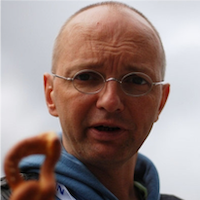

Faculty & Staff


Dr. Frank Nack
Senior Lecturer
Dr. Victoria Degeler
Associate Professor

Dr. Daphne Miedema
Assistant Professor


Dr. Francesco Compagno
Postdoctoral Researcher
PhD Students


Guest Researchers


Previous Members & Guests
- Dr. Na Li
- Mina Ghadimi Atigh (Postdoc at UvA MultiX group)
- Melika Ayoughi (UvA postdoc)
- Dr. Stefan Grafberger (Snowflake)
- Dr. Effy Xue Li (Postdoc - Centrum Wiskunde & Informatica)
- Dr. James Nevin (Postdoc Ichise Laboratory, Tokyo Institute of Technology)
- Dr. Stian Soiland-Reyes (Senior Lecturer - University of Manchester)
- Dr. Majid Lotfian Delouee (Postdoc at Amsterdam UMC)
- Fan Feng (City University of Hong Kong)
- Dr. Daniel Daza (Postdoc at Amsterdam UMC)
- Prof. Sebastian Schelter (Professor TU Berlin)
- Dr. Jacobijn Sandberg (Retired)
- Dr. Madelon Hulsebos (Postdoctoral fellow at UC Berkeley)
- Dr. Davide Talon (Italian Institute of Technology)
- Dr. Flavio Pileggi (University of Technology Sydney)
- Dr. Sara Magliacane (Amsterdam Machine Learning Lab - UvA)
- Dr. Anca Serbanescu (Politecnico di Milano)
- Dr. Valentina Carriero (University of Bologna)
- Dr. Hannes Mühleisen (CWI & DuckDB labs)
- Dr. Ji Zhang (Huawei)
- Dr. Peter Bloem (Vrije Universiteit Amsterdam)
- Valentin Vogelmann (DHLab)